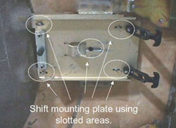

Illustration 2: Gantry Cover Mounting Plate and Screws

For example, if the distance between the collimator and the front cover is 5.5mm and the distance between the collimator and rear cover is 10.5mm, then the difference is 5mm. The front cover must be shifted right at least 2mm. This means that mounting bracket on the front cover must shifted at least 2mm left.